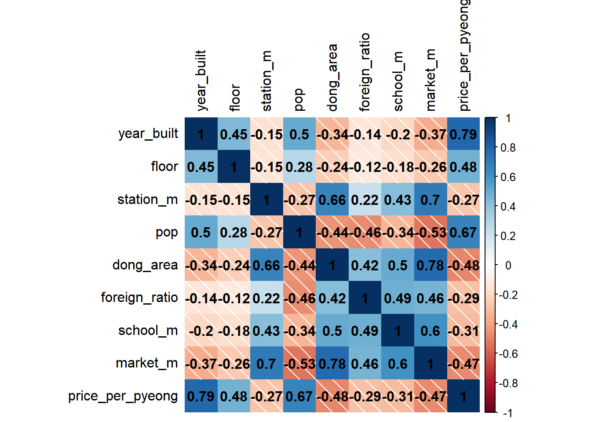
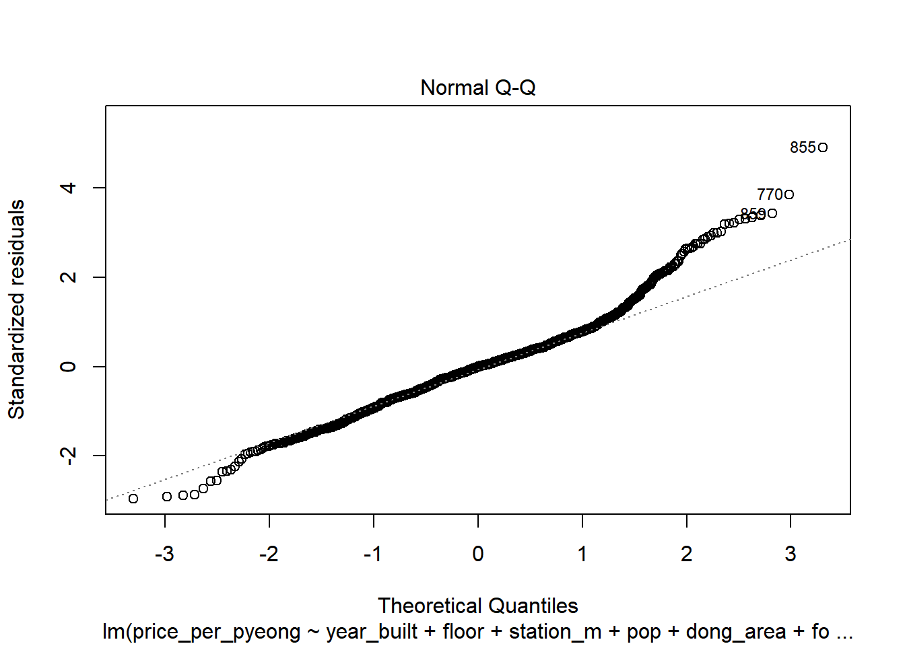
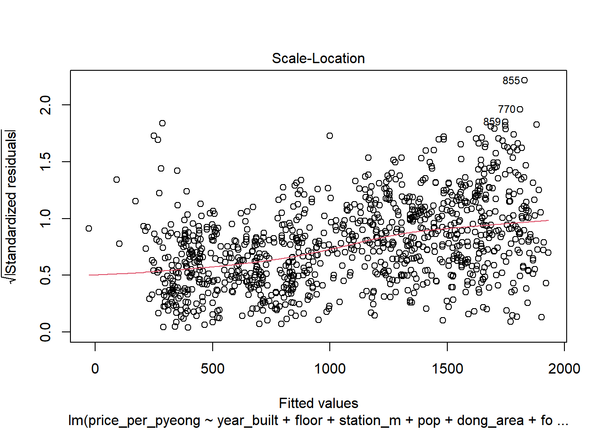
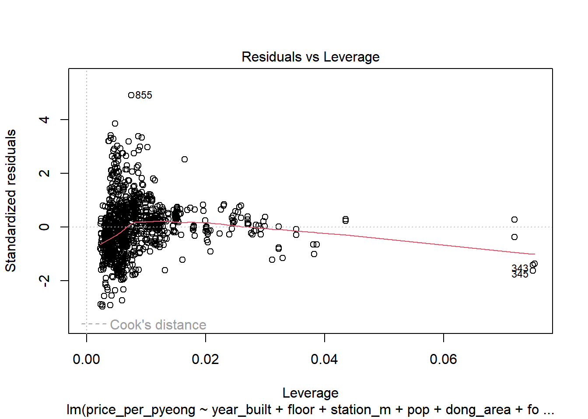
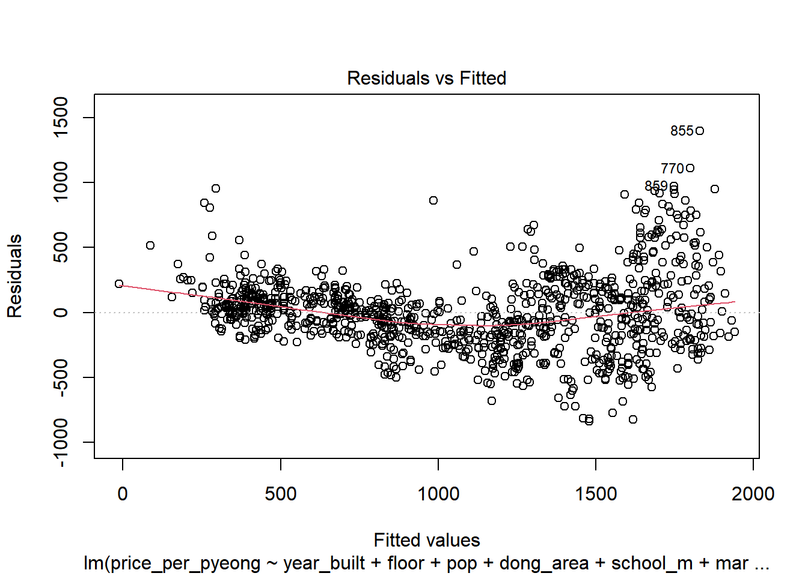
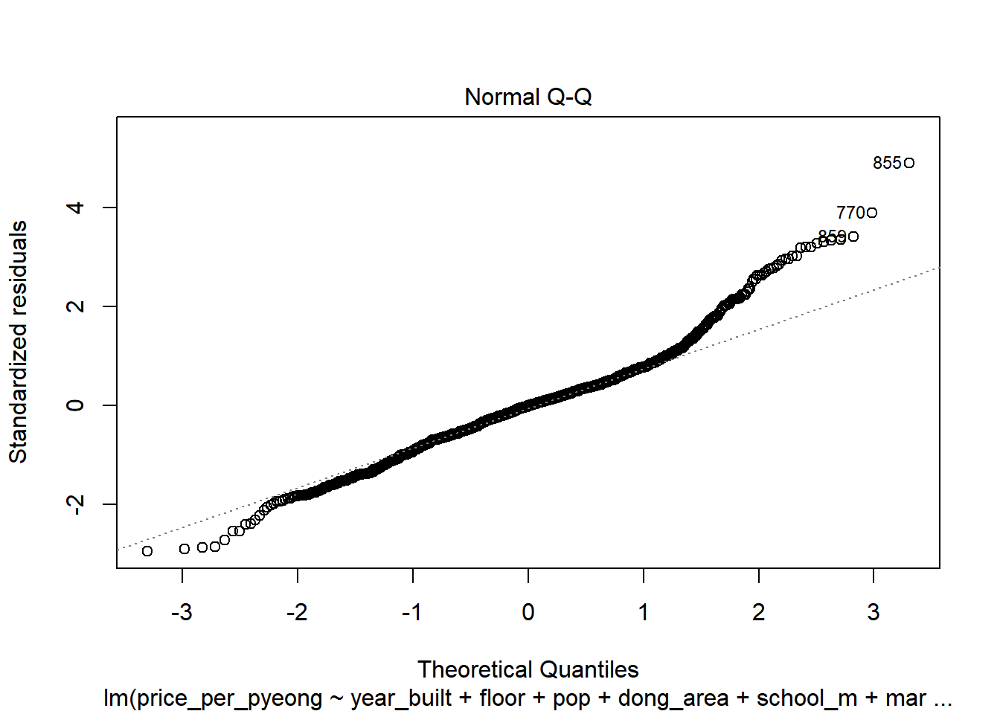
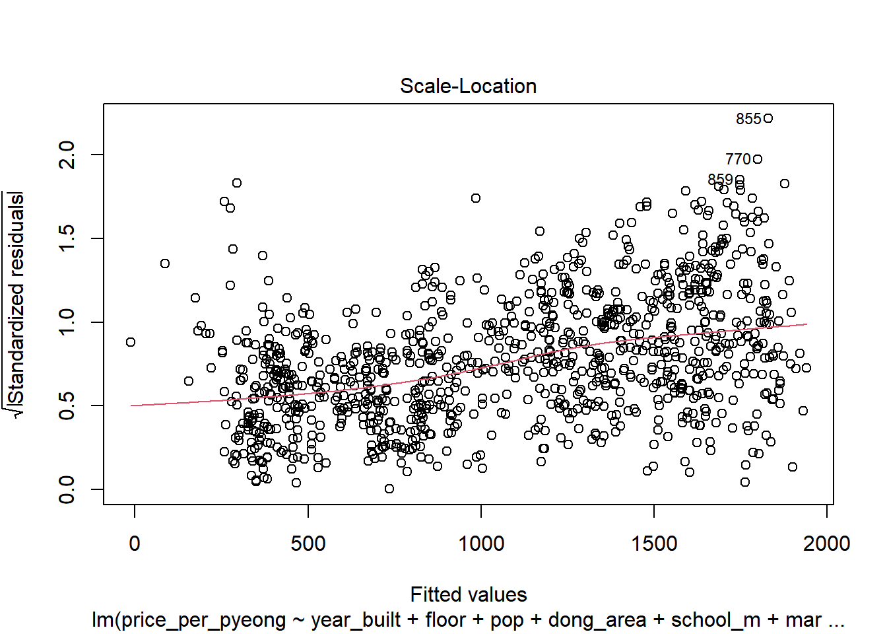
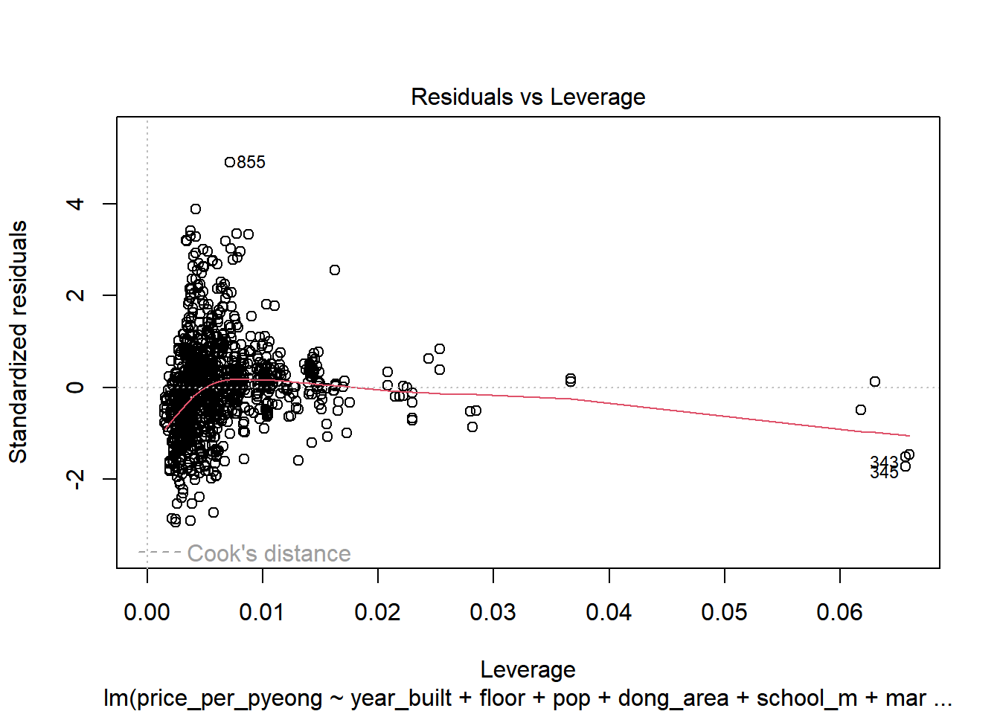

Linear model
R
Statistics basics
패키지 로드
library(readxl)
library(tidyverse)── Attaching core tidyverse packages ──────────────────────── tidyverse 2.0.0 ──
✔ dplyr 1.1.0 ✔ readr 2.1.4
✔ forcats 1.0.0 ✔ stringr 1.5.0
✔ ggplot2 3.4.2 ✔ tibble 3.2.1
✔ lubridate 1.9.2 ✔ tidyr 1.3.0
✔ purrr 1.0.1
── Conflicts ────────────────────────────────────────── tidyverse_conflicts() ──
✖ dplyr::filter() masks stats::filter()
✖ dplyr::lag() masks stats::lag()
ℹ Use the conflicted package (<http://conflicted.r-lib.org/>) to force all conflicts to become errorslibrary(car)필요한 패키지를 로딩중입니다: carData
다음의 패키지를 부착합니다: 'car'
The following object is masked from 'package:dplyr':
recode
The following object is masked from 'package:purrr':
somelibrary(corrplot)corrplot 0.92 loaded데이터
위도, 경도 데이터 제거
컬럼명 영문 변환
data <- read_excel("C:/linear_model_dataset_R.xlsx")
data <- data %>% select(-c(Latitude,Longitude))
names(data) <- c("year_built","floor","station_m","pop","dong_area","foreign_ratio","school_m","market_m","price_per_pyeong")| 한 | 영 |
|---|---|
| 건축년도 | year_built |
| 층 | floor |
| 근처 역까지의 거리 | station_m |
| 법정동 인구수 | pop |
| 법정동크기 | dong_area |
| 외국인 비율 | foreign_ratio |
| 근처 초등학교까지의 거리 | school_m |
| 근처 마트까지의 거리 | market_m |
| 평당 금액 | price_per_pyeong |
data %>% head()# A tibble: 6 × 9
year_built floor station_m pop dong_area foreign_r…¹ schoo…² marke…³ price…⁴
<dbl> <dbl> <dbl> <dbl> <dbl> <dbl> <dbl> <dbl> <dbl>
1 2015 9 324. 8191 0.61 0.0603 478. 1198 923.
2 2015 9 324. 8191 0.61 0.0603 478. 1198 938.
3 2015 9 324. 8191 0.61 0.0603 478. 1198 923.
4 2022 20 451. 8191 0.61 0.0603 460. 1149 1361.
5 2022 12 451. 8191 0.61 0.0603 460. 1149 1361.
6 2022 11 451. 8191 0.61 0.0603 460. 1149 1295.
# … with abbreviated variable names ¹foreign_ratio, ²school_m, ³market_m,
# ⁴price_per_pyeong상관행렬
data_cor <- cor(data)
data_cor year_built floor station_m pop dong_area
year_built 1.0000000 0.4452263 -0.1517927 0.5040012 -0.3377168
floor 0.4452263 1.0000000 -0.1499609 0.2791992 -0.2425241
station_m -0.1517927 -0.1499609 1.0000000 -0.2742544 0.6625711
pop 0.5040012 0.2791992 -0.2742544 1.0000000 -0.4440357
dong_area -0.3377168 -0.2425241 0.6625711 -0.4440357 1.0000000
foreign_ratio -0.1367913 -0.1164478 0.2242779 -0.4610396 0.4211463
school_m -0.2039064 -0.1784708 0.4277893 -0.3383860 0.5042992
market_m -0.3682454 -0.2615120 0.7017695 -0.5304463 0.7791119
price_per_pyeong 0.7890349 0.4754674 -0.2741590 0.6661318 -0.4809320
foreign_ratio school_m market_m price_per_pyeong
year_built -0.1367913 -0.2039064 -0.3682454 0.7890349
floor -0.1164478 -0.1784708 -0.2615120 0.4754674
station_m 0.2242779 0.4277893 0.7017695 -0.2741590
pop -0.4610396 -0.3383860 -0.5304463 0.6661318
dong_area 0.4211463 0.5042992 0.7791119 -0.4809320
foreign_ratio 1.0000000 0.4879119 0.4624987 -0.2947559
school_m 0.4879119 1.0000000 0.6046044 -0.3129903
market_m 0.4624987 0.6046044 1.0000000 -0.4731039
price_per_pyeong -0.2947559 -0.3129903 -0.4731039 1.0000000corrplot(data_cor,
method = "shade",
addCoef.col="black",
tl.col = "black")
선형회귀 모델
model <- lm(price_per_pyeong ~ year_built+floor+station_m+pop+dong_area+foreign_ratio+school_m + market_m,
data = data)
summary(model)
Call:
lm(formula = price_per_pyeong ~ year_built + floor + station_m +
pop + dong_area + foreign_ratio + school_m + market_m, data = data)
Residuals:
Min 1Q Median 3Q Max
-846.41 -177.59 -1.48 137.05 1399.25
Coefficients:
Estimate Std. Error t value Pr(>|t|)
(Intercept) -6.404e+04 2.324e+03 -27.555 < 2e-16 ***
year_built 3.225e+01 1.166e+00 27.652 < 2e-16 ***
floor 9.110e+00 1.327e+00 6.866 1.13e-11 ***
station_m -8.977e-03 5.920e-03 -1.516 0.129720
pop 9.438e-03 6.397e-04 14.754 < 2e-16 ***
dong_area -5.106e+00 8.185e-01 -6.238 6.41e-10 ***
foreign_ratio -2.985e+02 3.057e+02 -0.977 0.329008
school_m -3.629e-02 2.370e-02 -1.531 0.126009
market_m 2.995e-02 8.922e-03 3.356 0.000818 ***
---
Signif. codes: 0 '***' 0.001 '**' 0.01 '*' 0.05 '.' 0.1 ' ' 1
Residual standard error: 285.9 on 1050 degrees of freedom
Multiple R-squared: 0.7504, Adjusted R-squared: 0.7485
F-statistic: 394.5 on 8 and 1050 DF, p-value: < 2.2e-16회귀진단
plot(model)



변수선택
후진제거법
model_2 <- step(model,direction = "backward")Start: AIC=11987.65
price_per_pyeong ~ year_built + floor + station_m + pop + dong_area +
foreign_ratio + school_m + market_m
Df Sum of Sq RSS AIC
- foreign_ratio 1 77956 85906426 11987
<none> 85828470 11988
- station_m 1 187961 86016431 11988
- school_m 1 191661 86020131 11988
- market_m 1 920800 86749270 11997
- dong_area 1 3180881 89009351 12024
- floor 1 3853265 89681735 12032
- pop 1 17792408 103620878 12185
- year_built 1 62501062 148329532 12565
Step: AIC=11986.61
price_per_pyeong ~ year_built + floor + station_m + pop + dong_area +
school_m + market_m
Df Sum of Sq RSS AIC
- station_m 1 151136 86057562 11986
<none> 85906426 11987
- school_m 1 296692 86203118 11988
- market_m 1 873033 86779458 11995
- dong_area 1 3398846 89305272 12026
- floor 1 3843713 89750139 12031
- pop 1 20606383 106512809 12212
- year_built 1 63903206 149809632 12574
Step: AIC=11986.47
price_per_pyeong ~ year_built + floor + pop + dong_area + school_m +
market_m
Df Sum of Sq RSS AIC
<none> 86057562 11986
- school_m 1 290963 86348524 11988
- market_m 1 721900 86779462 11993
- floor 1 3858576 89916138 12031
- dong_area 1 4146877 90204439 12034
- pop 1 20481223 106538785 12211
- year_built 1 64152329 150209891 12574후진 제거법을 적용한 모델델
model_2 %>% summary
Call:
lm(formula = price_per_pyeong ~ year_built + floor + pop + dong_area +
school_m + market_m, data = data)
Residuals:
Min 1Q Median 3Q Max
-840.97 -171.39 -1.21 136.01 1398.31
Coefficients:
Estimate Std. Error t value Pr(>|t|)
(Intercept) -6.324e+04 2.268e+03 -27.878 < 2e-16 ***
year_built 3.184e+01 1.137e+00 28.004 < 2e-16 ***
floor 9.115e+00 1.327e+00 6.868 1.11e-11 ***
pop 9.536e-03 6.026e-04 15.823 < 2e-16 ***
dong_area -5.533e+00 7.771e-01 -7.120 2.00e-12 ***
school_m -4.271e-02 2.264e-02 -1.886 0.05958 .
market_m 2.398e-02 8.074e-03 2.971 0.00304 **
---
Signif. codes: 0 '***' 0.001 '**' 0.01 '*' 0.05 '.' 0.1 ' ' 1
Residual standard error: 286 on 1052 degrees of freedom
Multiple R-squared: 0.7497, Adjusted R-squared: 0.7483
F-statistic: 525.1 on 6 and 1052 DF, p-value: < 2.2e-16회귀진단
plot(model_2)


